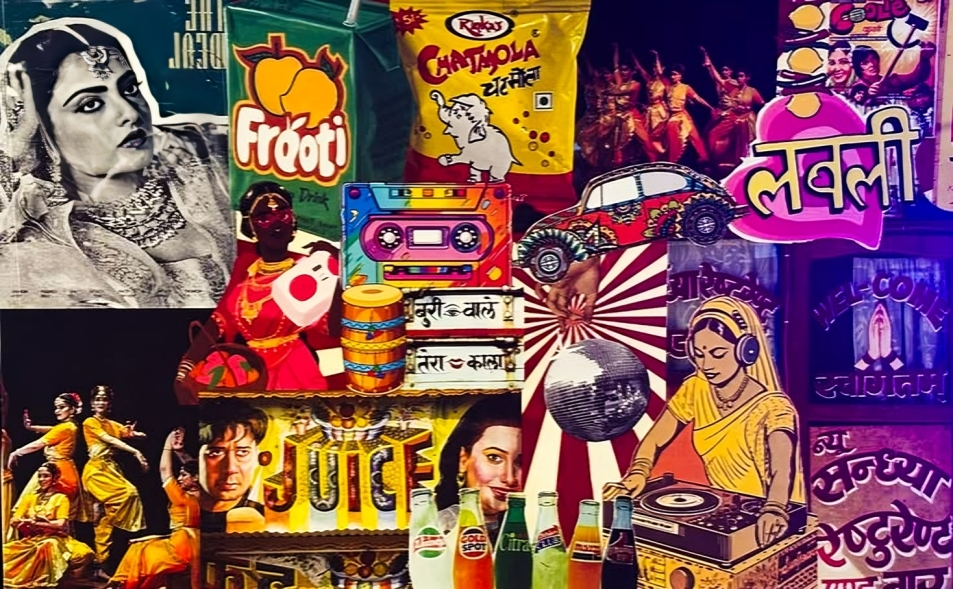
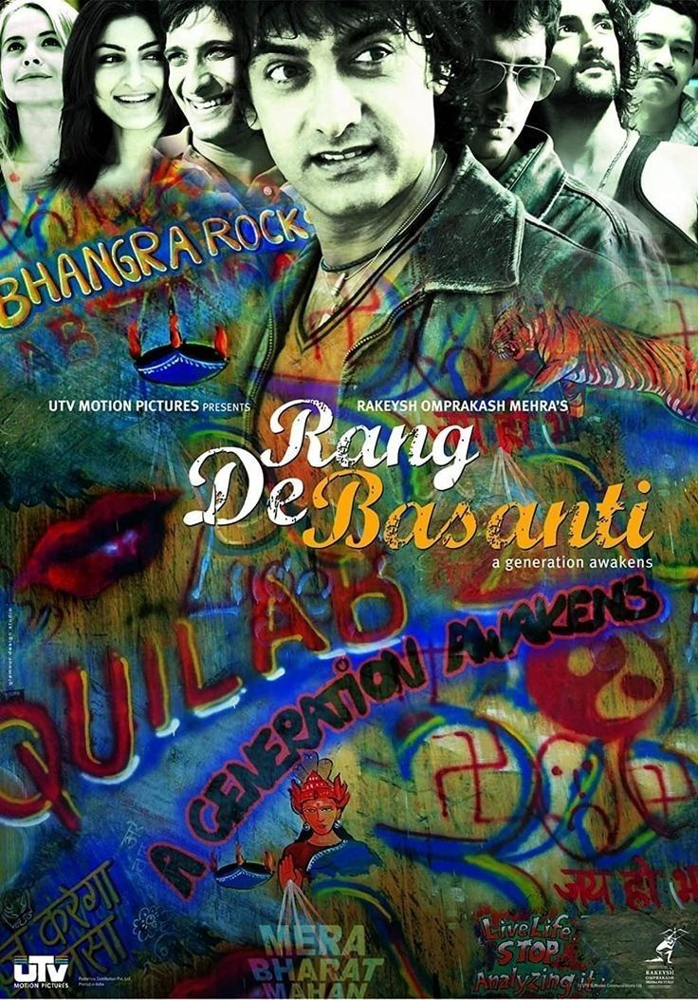
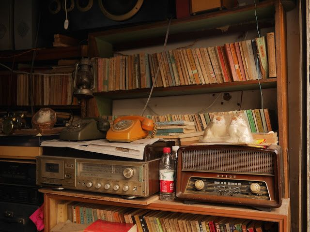
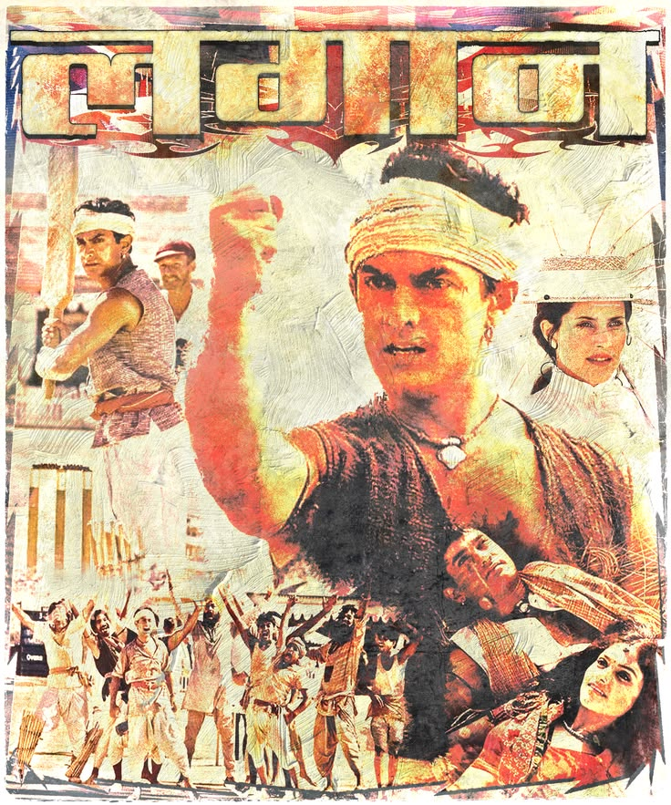
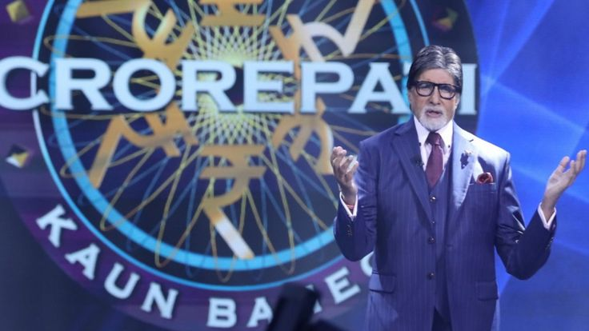
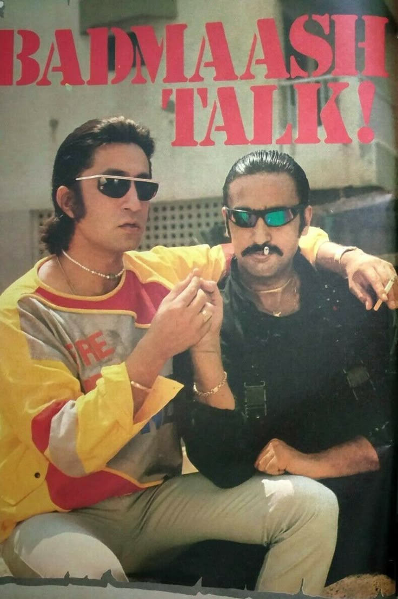
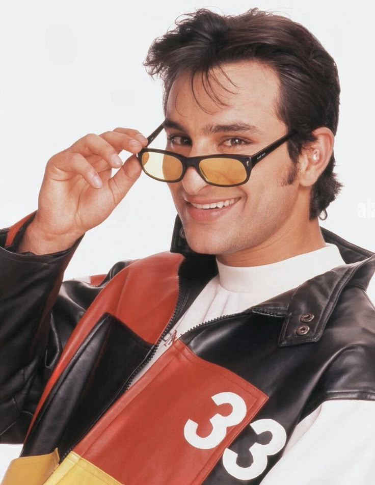
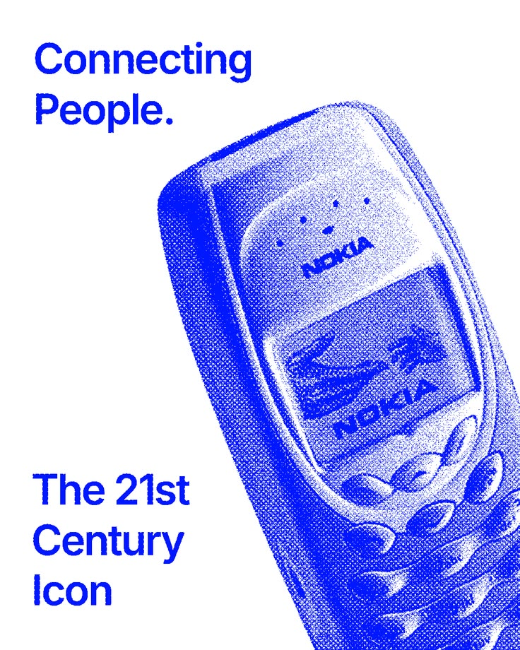
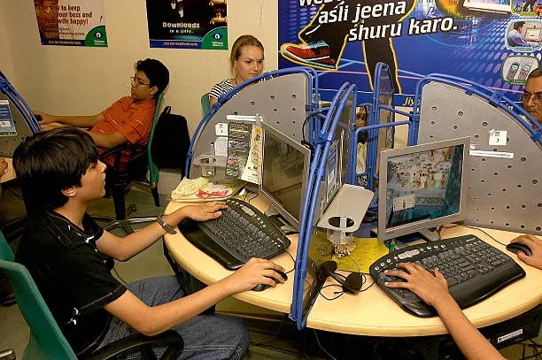
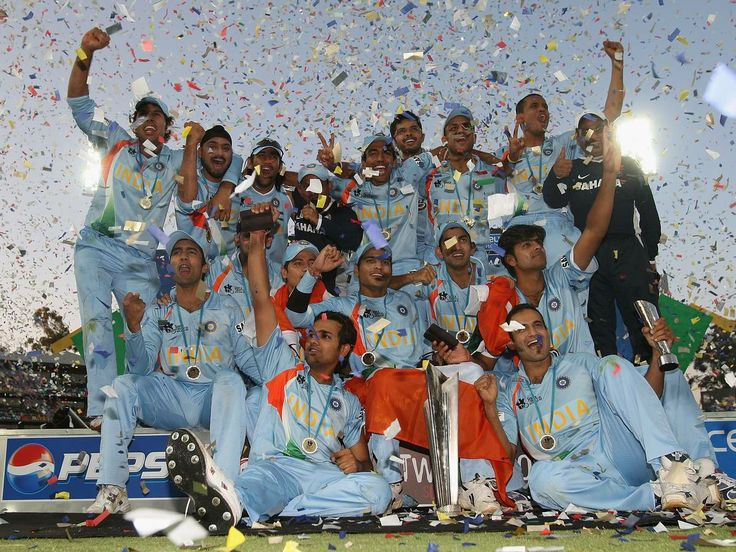

Chapter 04 of 04 ~ 2000-2009
The 2000s
The Digital Beginning
An era where India's IT boom and the birth of the most nostalgic analog charm—bridging Nokia brick phones and Facebook with the thrill of the 2007 T20 World Cup. It was the beautiful spot of modern ambition and simple joys.

01 / 05
Music
Rang De Basanti's music
A.R. Rahman's music for Rang De Basanti (2006) defined many playlists of the decade.
FM radio opens up
Private FM radio channels arrived in the early 2000s, bringing a chatty new style to listening.


02 / 05
Cinema and Television
Lagaan and Rang De Basanti
Lagaan (2001) was nominated for an Oscar, and Rang De Basanti (2006) got young audiences talking.
Quiz shows and talent contests
Kaun Banega Crorepati (2000) and Indian Idol (2004) made game shows and singing contests family viewing.


03 / 05
Fashion and Lifestyle
Campus style
College wardrobes blended jeans, kurtas and sports labels, mixing everyday Indian wear with global trends.
The Dil Chahta Hai look
Dil Chahta Hai (2001) made a goatee and a laid-back urban style fashionable among young men.


04 / 05
Technology
Nokia handsets
Nokia phones with Snake and SMS made mobile phones personal for many people.
The cybercafe's era
Cybercaf's were where many people first browsed the internet, sent email and chatted online.


05 / 05
Everyday Life
Facebook's Arrival
Facaebook was launched in 2004 and became popular in India real quick. Eventually became and iconic sensation.
T20 glory
India won the first T20 World Cup in 2007 which was a great milestone!